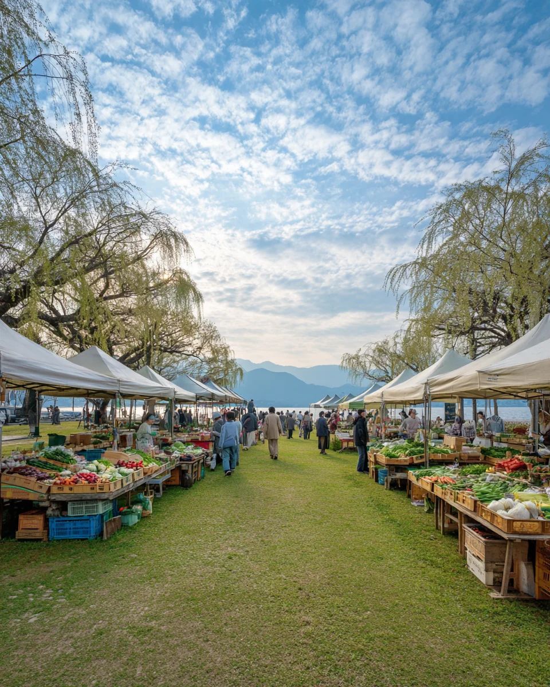

第 12 回
湖のそばで、
朝に買う。
2027年5月15日（土）・16日（日）
7:00 — 12:00 ／ 雨天決行・荒天中止
滋賀のつくり手 48 組が並びます
入場無料・予約不要
並ぶもの
朝採りの野菜
近江八幡・草津・守山
焼きたてのパンと菓子
大津・湖南
湖魚の佃煮と乾物
高島・長浜
器と木の道具
信楽・甲賀
珈琲と、その場で飲めるもの
場所と来かた
会場
びわこ湖畔公園 芝生広場
電車
JR〇〇駅 西口から徒歩 12 分
車
臨時駐車場 240台（1日 500円）
持物
袋はお持ちください。保冷剤は会場でお渡しします
問合
077-000-0000（平日 10:00〜16:00）
出店一覧
主催：びわこ朝市実行委員会 biwako-asaichi.example.jp